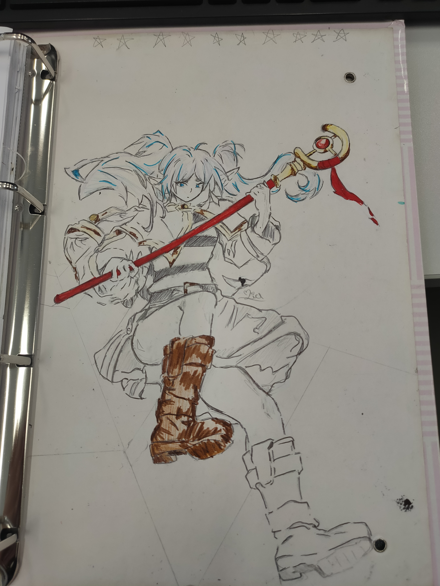
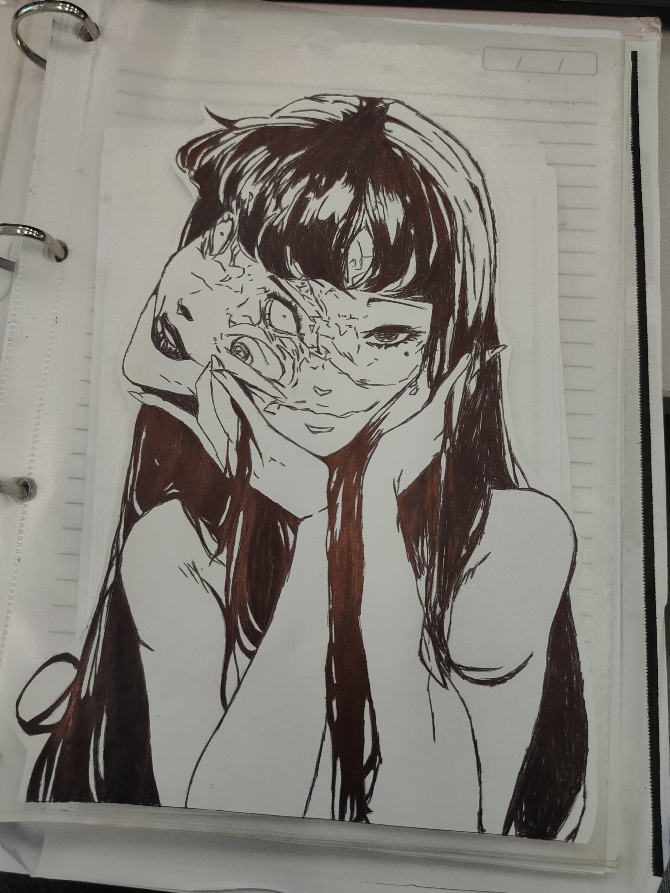
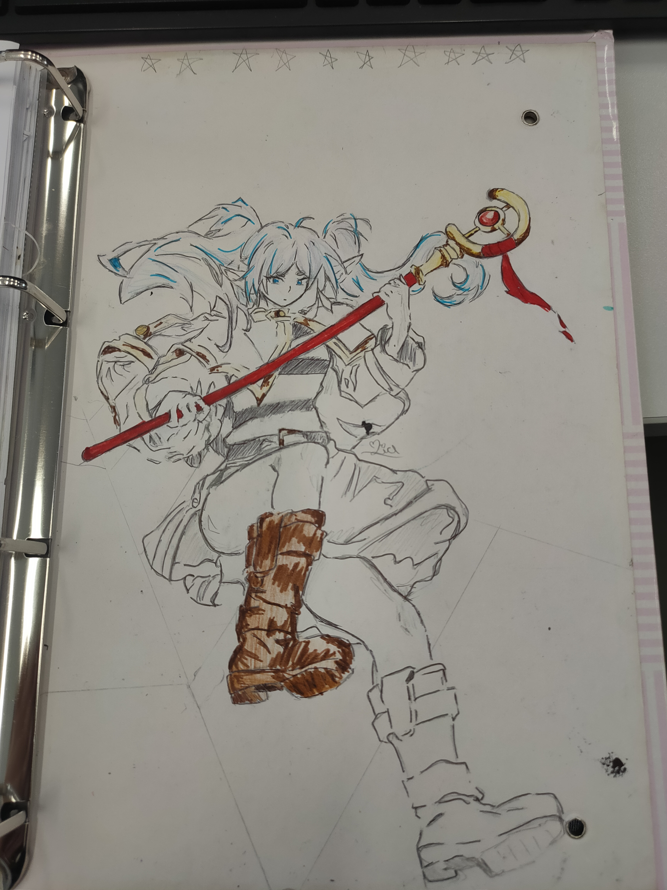
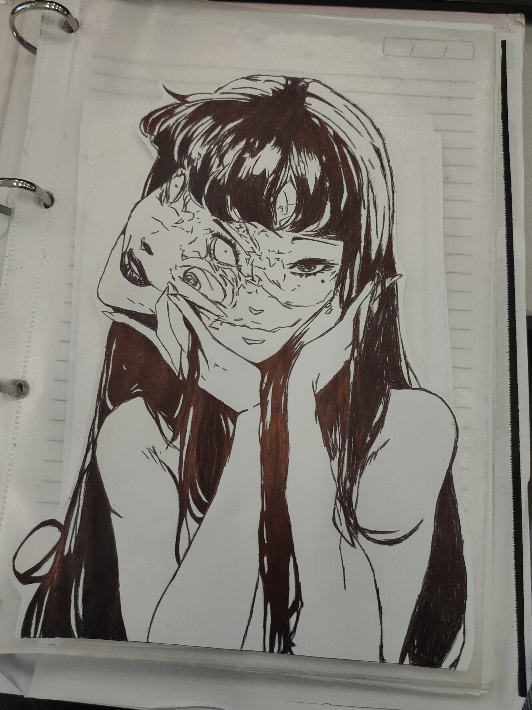

Atividades criativas.
Habilidades artísticas:
Habilidades avançadas com desenho tanto digitais quanto físicos.
 
Atividades técnicas:
Curso de IA em nuvem do SENAI
Esse portfólio tem como objetivo apresentar metas, projetos, objetivos e informações pessoais.
Me chamo Eloisa Lima Bambil Flores, sou bem comunicativa e gosto bastante de aprender coisa novas. Gosto muito de gatos e de cozinha. Sou bem caseira então costumo sair somente com meu namorado. Futuramente tenho o objetivo de cursar astro biologia na UNICAMP.
Nessa eletiva tivemos como objetivo trabalhar um meio entre a arte e a matemática utilizando de formas geométricas para criar desenhos. Nossa apresentação final foi a exibição dessas artes com tinta neon para chamar maior atenção do público.
Essa atividade exercitava a criatividade, imaginação e trabalho em equipe dos participants utilizando de um jogo de interpretação.
Habilidades avançadas com desenho tanto digitais quanto físicos.
 
Curso de IA em nuvem do SENAI
Trabalhei por 5 meses em buffet nos fins de semana onde desenvolvi habilidades como trabalho em equipe, agilidade e um pouco de culinária.
Trabalhei por anos vendendo algumas comissões dos meus desenhos.
.png)
![]()